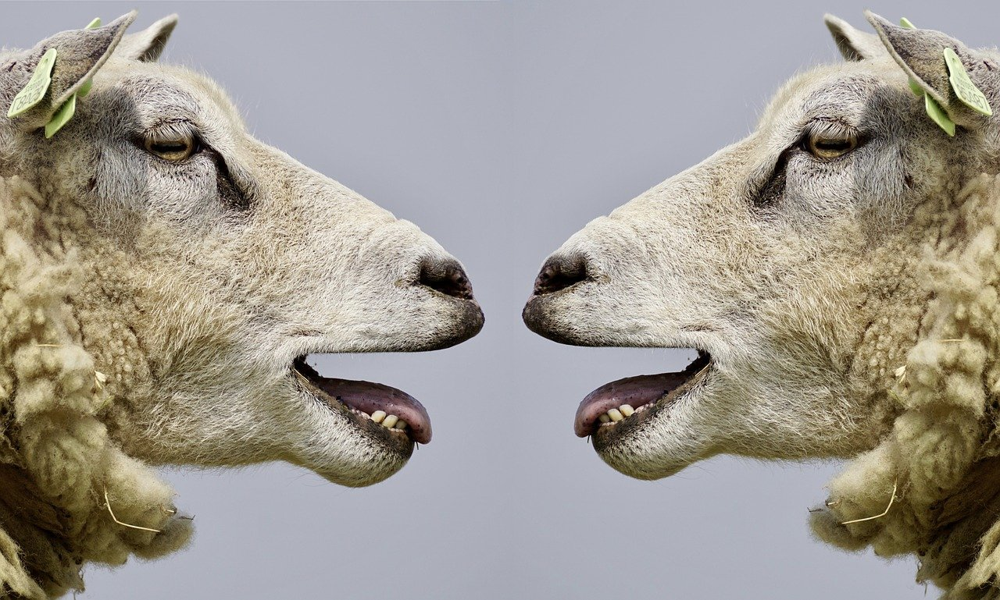
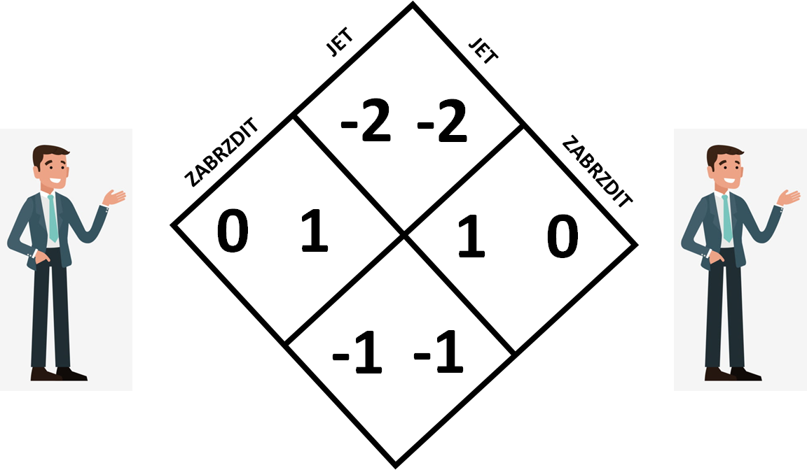

Obec měla k dispozici velkou pastvinu a rozhodla se, dát ji k dispozici všem deseti pastýřům, kteří zde žili. Vědělo se, že optimální počet ovcí na pastvinu je 100, tedy 10 ovcí na každého. Každý pastýř poslal na pastvu nejdříve 10 ovcí. Potom ale jednomu pastýři došlo, že když na pastvu dá dvě ovce navíc, nikdo si toho moc nevšimne a sám bude mít větší zisky. Stejná myšlenka napadla i další dva pastýře. Když bylo na pastvě ovcí víc, ovce ostatních pastýřů začali strádat, protože neměli tolik trávy ke spasení. A tak i ostatní pastýři poslali na pastvu další ovce. Tak to šlo dál až byly ovce a pastva v tak žalostném stavu, že ji musela obec raději zavřít.
Tento příklad se často používá k ilustraci problému, který má řešit společně více národů, jakým je třeba Globální oteplování. Zajímavé také je, že když se pastýři dobře znají a navzájem se hlídají, tak problém pravděpodobně nevznikne. Pokud je ale pastýřů tolik, že se navzájem neznají, tak nejspíše nastane. Příběh lze tedy použít i jako ukázku toho, že systémy sdíleného vlstnictví mohou špatně fungovat ve velké anonymizované společnosti. Vymyslíte další případy z běžného života, kde se tento princip nachází? Objevíte v něm prvky vězňova dilematu, nebo honu na jelena?
Na závěr se ještě podívejme na jednu hru pro dva hráče. Obecně bývá nazývána jako hra na sraba. Původ tohoto názvu bude jasný z následujícího příběhu. Dvě auta jedou proti sobě a směřují k úzké uličce, kam se vejde pouze jeden automobil. Mají na výběr, jak to tak již bývá, dvě strategie:
1) Nezabrzdit před uličkou a směřovat přímo do ní
2) Zabrzdit a počkat dokud neprojede druhý automobil
Rovnou bez podrobného komentáře si můžeme znázornit možnou matici:
Hra na sraba se často vyskytuje v různých situacích, kde jde člověku tzv. "o čest", tedy snaží se druhého dotlačit do úzkých tím, že co nejdéle neustoupí. Pokud nakonec neustoupí nikdo, může to skončit například srážkou zmíněných aut.
Představte si nějakou sitauci (dilema) a pokuste se ho znázornit pomocí matice. Často dojdete k vězňově dilematu nebo honu na jelena, ale není vyloučené, že najdete ještě najakou další zajímavou hru. Nebo to můžete vyzkoušet také naopak. Nedříve si představte matici a k ní teprve zkuste vymyslet konkrétní situaci. Obojí je jistě zajímavý trénink schopnosti abstraktního myšlení.
Zpět na dilemata Východiska z dilematů